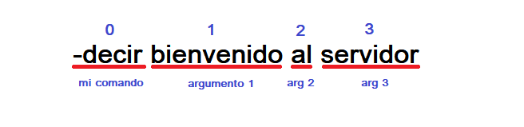

Instalación y uso de un editor de código
Creación de su cuenta App y de Bot
Instalación de Discord.js y Node.js
Introducción a un Bot de musica/audio
En el capítulo en marcha su primer Bot, aprendimos como hacer más de un comando. Y todos los comandos comienzan con un prefix, pero no tenían argumentos.
Los argumentos son parámetros adicionales usados para variar lo que realmente hace el comando. Lo primero que tenemos que hacer para usar argumentos, es separar el comando con el resto.
Para separar los argumentos agregamos las 2 siguientes líneas de código:
const args = message.content.slice(prefix.length).trim().split(/ +/g);
const command = args.shift().toLowerCase();
| Nombre | Descripción |
|---|---|
| .slice() | Esto ignora el primer contenido del texto que seria el prefix mas el comando (-decir), dejandonos solo el texto siguiente (arg1, arg2, arg3, etc.) |
| .trim() | Asegura que no haya espacios adicionales antes o después del texto |
| .shift() | Elimina el primer elemento de la matriz(micomando) y devuelve los argumentos restantes[arg1 ,arg2, arg3] |
De forma grafica:

NOTA: En la programación siempre se inicia contando desde el numero 0.
Empezemos a utilizar los argumentos en algunos comandos utiles, Ahora que tenemos la variable "command" ya no necesitamos usar startsWith() para cada comando:
if(message.content.startsWith(prefix+'ping'))Podemos simplificarlo de esta manera, reemplazamos
if(command === 'ping')Agregamos 2 nuevos comandos, "decir" hace que el bot diga lo que acaba de enviar:
let texto = args.join(" ");
if(command === 'decir'){
if(!texto) return message.channel.send(`Escriba un contenido pára decir.`);
message.channel.send(texto);
}Y "8ball" comando que respondera a tus preguntas:
if(command === '8ball'){
var rpts = ["Sí", "No", "¿Por qué?", "Por favor", "Tal vez", "No sé", "Definitivamente?", " ¡Claro! "," Sí "," No "," Por supuesto! "," Por supuesto que no "];
if (!texto) return message.reply(`Escriba una pregunta.`);
message.channel.send(message.member.user+' a su pregunta `'+texto+'` mi respuesta es: `'+ rpts[Math.floor(Math.random() * rpts.length)]+'`');
}También puede usar la variable "command" dentro en un bloque de comandos switch/case de la siguiente manera:
switch (command){
case "ping":
message.channel.send('Pong!');
break;
case "decir":
if(!texto) return message.channel.send(`Escriba un contenido pára decir.`);
message.channel.send(texto);
break;
}Otra forma de utilizar argumentos, es cuando el comando debe dirigirse a un usuario específico. Por ejemplo, para obtener el avatar de un usuario, banear, kickear, etc.
Todas las menciones en un mensaje forman parte de la matriz message.mentions.
Vamos a crear un nuevo comando "kick" para controlar la matriz y los argumentos, debido a que Discord ahora soporta motivos de kick en los registros de auditoría-log por lo tanto el comando kick admite una razón opcional que sera el argumento.
if(command === 'kick' ){
let user = message.mentions.users.first();
let razon = args.slice(1).join(' ');
if (message.mentions.users.size < 1) return message.reply('Debe mencionar a alguien.').catch(console.error);
if (!razon) return message.channel.send('Escriba una razón, `-kick @username [razón]`');
if (!message.guild.member(user).kickable) return message.reply('No puedo patear al usuario mencionado.');
message.guild.member(user).kick(razon);
message.channel.send(`**${user.username}**, fue pateado del servidor, razón: ${razon}.`);
}Para utilizar este comando debe mencionar a un usuario, como este ejemplo:
-kick @username [razón] Ahora en este punto, trabajar con los argumentos se convierte en algo que podría darse cuenta de que es necesario para mejorar sus comandos y su código. Por lo tanto, vayamos al Siguiente capítulo.
Si tiene alguna pregunta y/o duda después de leer esta guía, ingrese al servidor guía en Discord: MyBOT - Server guía.
Sitio web github/Crater